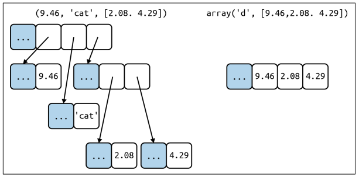
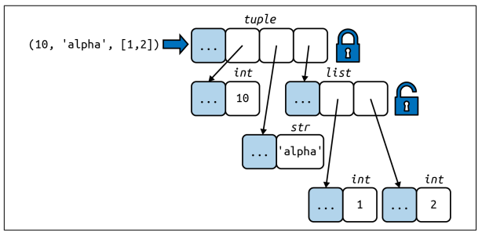

Chapter 2
Overview of Built-In Sequences
根据Sequences中存储的元素类型，可分为Container sequences和Flat sequences。
- Container sequences: 可存储不同类型的元素(下左图)
- Flat sequences: 只能存储一种类型的元素(下右图)

Container sequences v.s. Flat sequences
根据Sequences中存储的元素是否可变，可分为Mutable sequences和Immutable sequences。
- Mutable sequences: 其中的元素可变
- Immutable sequences: 其中的元素不可变
List Comprehensions and Generator Expressions
若需要快速生成序列类型，可使用列表推导式(list comprehensions)(生成的对象为list)或生成器表达式(generator expressions)(生成对象为其他序列类型)。
-
列表推导式
| 列表推导式1 |
|---|
| >>> x = 'ABC'
>>> codes = [ord(x) for x in x]
>>> x
'ABC'
>>> codes
[65, 66, 67]
|
| 列表推导式2 |
|---|
| >>> colors = ['blank', 'white']
>>> sizes = ['S', 'M']
>>> tshirts = [(color, size) for color in colors for size in sizes]
>>> tshirts
[('blank', 'S'), ('blank', 'M'), ('white', 'S'), ('white', 'M')]
|
-
生成器表达式
| 生成器表达式1 |
|---|
| >>> x = 'ABC'
>>> codes = (ord(x) for x in x)
>>> x
'ABC'
>>> list(codes)
[65, 66, 67]
|
| 生成器表达式2 |
|---|
| >>> colors = ['blank', 'white']
>>> sizes = ['S', 'M']
>>> for tshirt in (f'{color} {size}' for color in colors for size in sizes)
... print(tshirts)
blank S
blank M
white S
white M
|
Tuples Are Not Just Immutable List
tuple既可以作为不可变列表，也可以用作没有字段名称的记录。
- tuple作为没有字段名称的记录
| tuple作为没有字段名称的记录 |
|---|
| >>> traveler_ids = [('USA', '31195855'), ('BRA', 'CE342567'), ('ESP', 'XDA205856')]
>>> for passport in sorted(traveler_ids):
... print('%s/%s' % passport)
...
BRA/CE342567
ESP/XDA205856
USA/31195855
|
- tuple作为不可变的list
这样可以带来两个好处：1.简洁：当使用tuple时，你应该知道它的长度不可变。2.效率更高：对于同等长度的list与tuple，tuple所需的存储空间更小。但是，应该注意的是虽然tuple中元素值不可改变，但是元素值所指对象是可以改变的，如下图所示。

The content of the tuple itself is immutable, but referenced objects is mutable.
如果需要判断tuple是否有固定的值，可使用hash函数，如下所示。
| 判断tuple是否有固定的值的fixed函数 |
|---|
| >>> def fixed(o):
... try:
... hash(o) # 获取o的哈希值
... except TypeError:
... return False
... return True
|
Unpacking Sequences and Iterables
- unpacking的第一种方式：parallel assignment
| 最常见的unpacking形式:parallel assignment |
|---|
| >>> lax_coordinates = (33, 118)
>>> lat, lon = lax_coordinates # unpacking
>>> lat
33
>>> lon
118
|
- unpacking的第二种方式：prefixing an argument with *
| unpacking的另一种方式:prefixing an argument with * |
|---|
| >>> divmod(20, 8)
(2, 4)
>>> t = (20, 8)
>>> divmod(*t)
(2, 4)
|
- 使用*去除多余的元素
| 使用*去除多余的元素 |
|---|
| >>> a, b, *rest = range(5)
>>> a, b, rest
(0, 1, [2, 3, 4])
>>> a, b, *rest = range(3)
>>> a, b, rest
(0, 1, [2])
>>> a, b, *rest = range(2)
>>> a, b, rest
(0, 1, [])
>>> a, *body, c, d = range(5)
>>> a, body, c, d
(0, [1, 2], 3, 4)
>>> *head, b, c, d = range(5)
>>> head, b, c, d
([0, 1], 2, 3, 4)
|
Pattern Matching with Sequences
对于python 3.10，其引入了match/case语句，使用方法如下：
| match/case的使用方法 |
|---|
| def handle_command(self, message):
match message: # 需要进行匹配的为message变量的值
case ['BEEPER', frequency, times]: # message变量的值由三部分构成，第一个部分一定是BEEPER，将第二/三部分的值分别赋值给frequency和times变量
self.beep(times, frequency)
case ['NECK', angle]: # message变量的值由两部分构成，第一个部分一定是NECK，将第二个部分的值赋值给angle变量
self.rotate_neck(angle)
case _: # 上述两种情况都不满足
raise InvalidCommand(message)
|
match\case语句中能够加入对变量类型信息的判断，如下所示：
| 在match\case语句中加入对变量类型信息的判断 |
|---|
| case [str(name), _, _, (float(lat), float(lon))]
# name必须为str类型，lat和lon都必须为float类型
|
match\case语句中能够加入if语句，如下所示：
| 在match\case语句中加入if语句 |
|---|
| match record:
case [name, _, _, (lat, lon)] if lon <= 0:
...
|
Slicing
对于下述的代码
| slice对象 |
|---|
| >>> s = 'bicycle'
>>> s[0:2]
'bi'
|
[]中的部分产生了一个slice对象。s[0:2]等价于s[slice(0, 2)]
Using + and * with Sequences
+=实际上是__iadd__方法在起作用。如果__iadd__方法不起作用，将调用__add__方法，即a += b将转换为a = a + b。a + b首先被计算，然后将该计算的结果捆绑到变量a上。对于mutable sequences，a+b将被捆绑到a上，id(a)不发生变化，而对于immutable sequences，a+b不能被捆绑到a上，因此id(a)发生变化。*=的操作与+=类似。
When a List Is Not the Answer
如果list中只有数字，那么array.array是一个更有效率的选择。
| array.array用法示例 |
|---|
| >>> from array import array
>>> from random import random
>>> floats = array('d', (random() for i in range(10**7))) # 从生成器表达式构造一个双精度浮点数的array
>>> floats[-1]
0.07802343889111107
|
-
Memory Views
-
Numpy
| numpy.ndarry用法示例 |
|---|
| >>> import numpy as np
>>> a = np.array(12)
>>> type(a)
<class 'numpy.ndarry'>
|
- Deques and Other Queues
collections.deque为双端队列，即在队列的两端都可以增删元素。